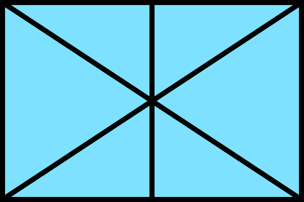

Map Legend
 Defender (A,B)
Attacker (A,B,C)
Purple Square (A): Tile shot by A
Purple Square (B): Tile shot by B
Prediction Movements:
Attacker A:
Dark red: Most likely
Light red: Second likely
Attacker B:
Dark green: Most likely
Light green: Second likely
Attacker C:
Dark blue: Most likely
Light blue: Second likely
New Game
Next Turn
Toggle Paths
Predict Attacker Movement
AI Output
Toggle Action Log
Toggle Legend